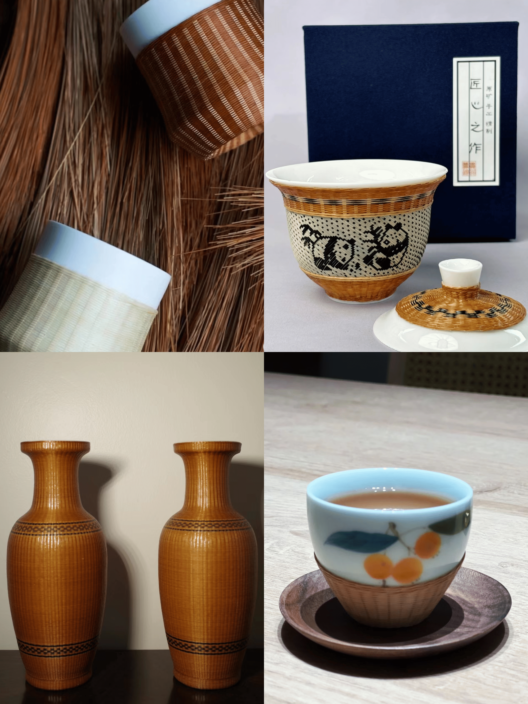

成品专栏
 |
 | |
| 糖画 | 瓷胎竹编 | 陶瓷类 |
|
糖画，中国传统民间手工艺瑰宝。仅一勺一铲，糖料经温火熬制，便可在艺人手中幻化成万千姿态。 |
瓷胎竹编，仿若穿越千年时光的艺术精灵，静立在传统工艺的璀璨殿堂。 | 陶瓷，这一穿越千年历史长河的艺术瑰宝，以其独特魅力震撼心灵，每一件皆为岁月凝练的不朽传奇。 |
 |
 |
|
| 漆器 | 玉雕 | 砂器 |
| 漆器，宛如一颗闪耀在东方文化苍穹的璀璨星辰，静静散发着穿越时光的迷人光辉，是传统手工艺的绝世珍宝。 | 玉雕，恰似自然与匠心交织而成的梦幻诗篇，于指尖方寸间镌刻着华夏文明的深邃灵魂，是艺术殿堂中永不褪色的瑰宝。 | 砂器，仿若大地深处孕育而生的艺术精灵，带着泥土的质朴与匠人的深情，在传统工艺的舞台上闪耀独特光芒。 |